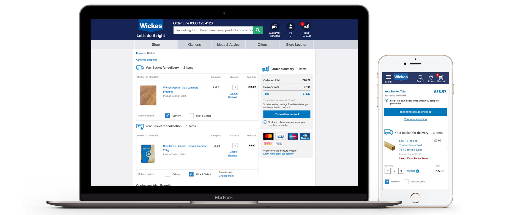

The scope of the project was to update and improve the user experience and the design on the basket page of the Wickes website. No extra functionality could be added to the experience. The goal was to increase conversions by decreasing abandoned baskets and to update the design bring in line with current new UI components. One of the main observations was that the differentiation between click and collect and delivery wasn't clear enough and we wanted the user to be able to switch between the two easily
As the turnaround for the project was so short (3 weeks) I had to work as much to best practices as possible in order to get the designs over the line. Competitor research was conducted, wireframes were created and the designs were prototyped. An A/B/C test (control vs 2 new designs) was conducted over 1 month. This was moved to an A/B when the best of the 2 new designs was determined
The 50/50 A/B test was a success and moved to 100% after confidence was gained resulting in an uplift in customers checking out from the basket page. The incremental value was an extra £31.60 was spent per 100 customers visiting the basket. This equates to £1.6 million over a year. The basket page change was made permanent.